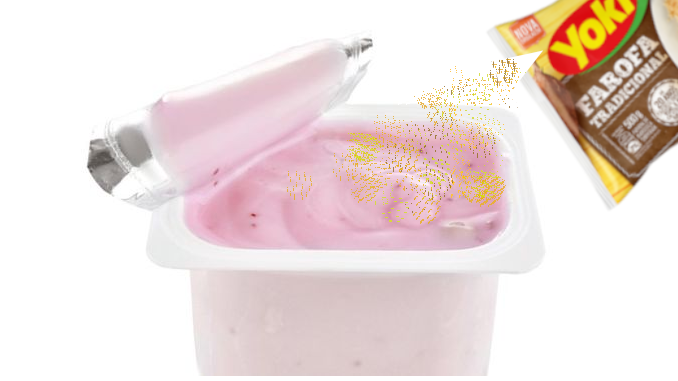

Deliciosa receita de iogurte com farofa  Ingredientes: Iogurte de morango; Farofinha hmmm. Modo de Preparo: Abra o iogurte. Abra o saco de farofa Jogue todo o saco de farofa no seu iogurte (é importante não deixar nem um farelo); Delicie-se